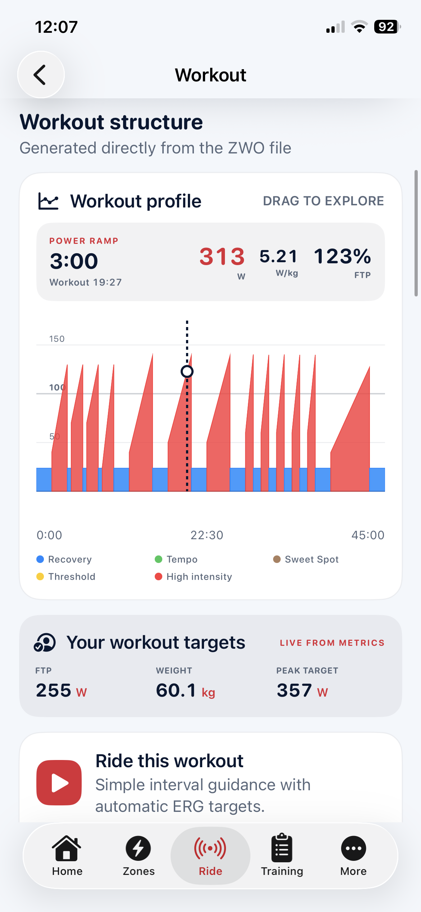
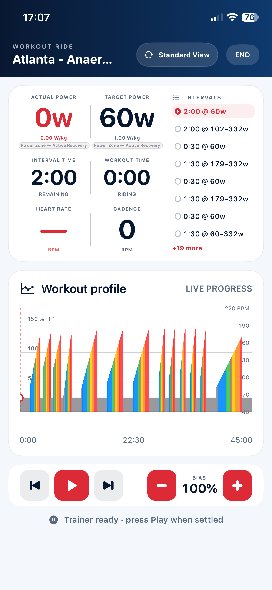
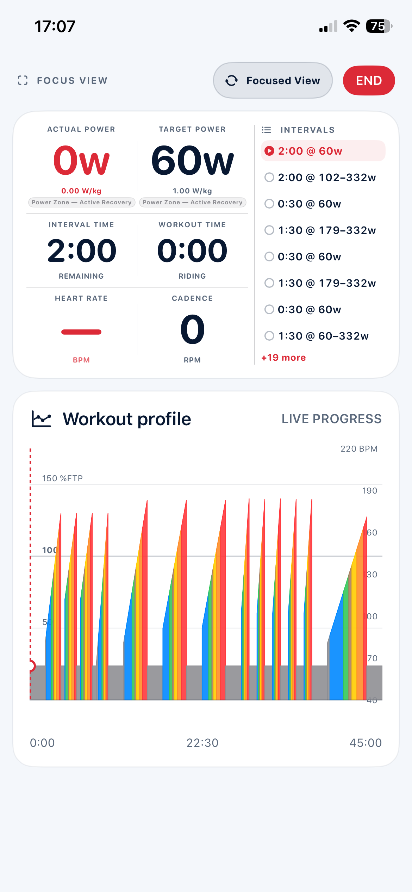
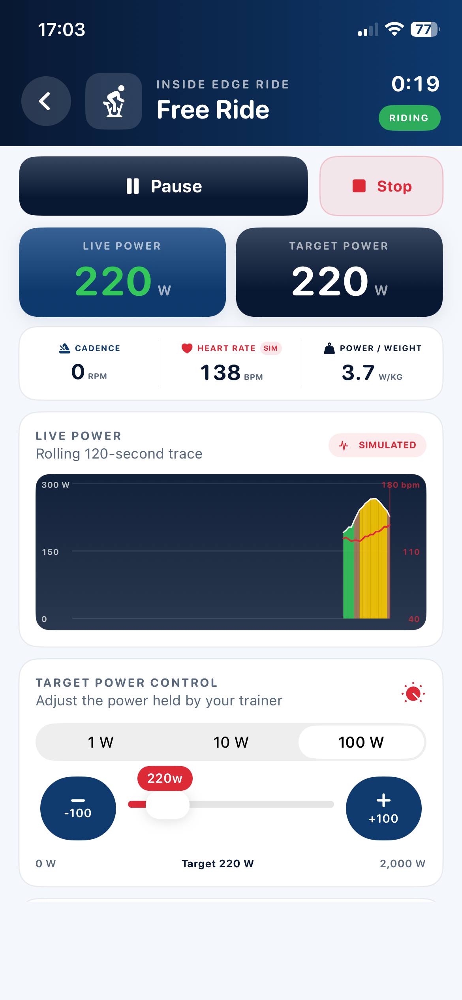
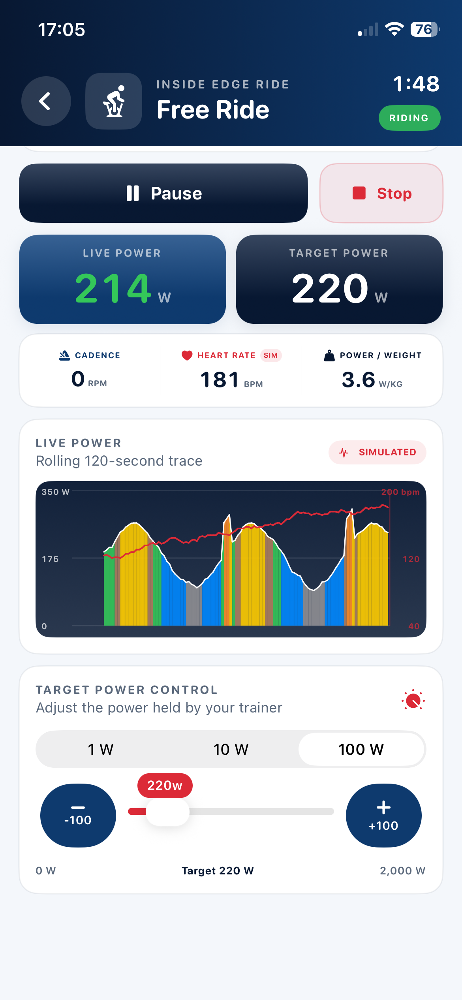
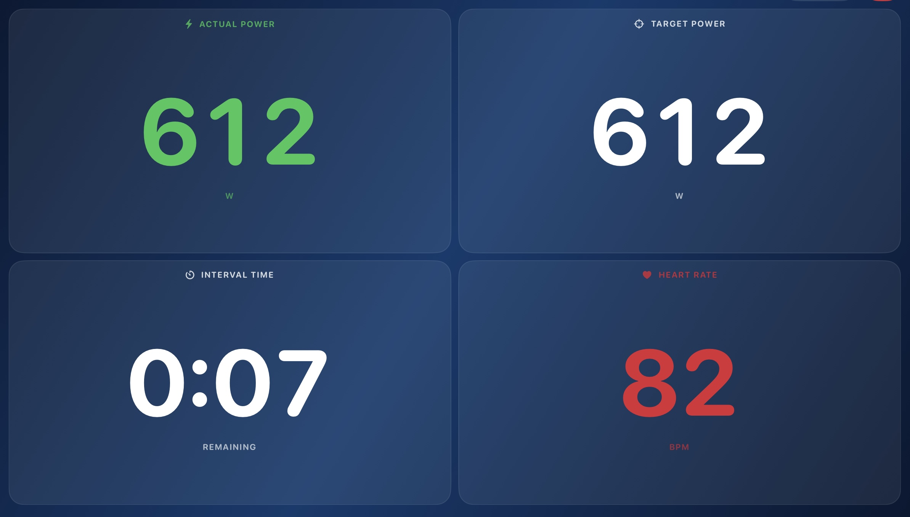
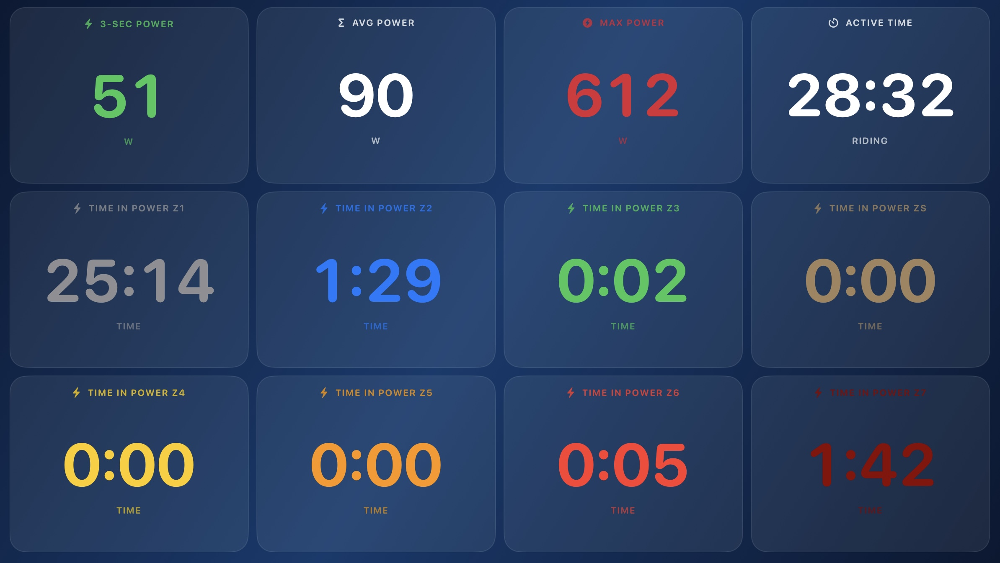
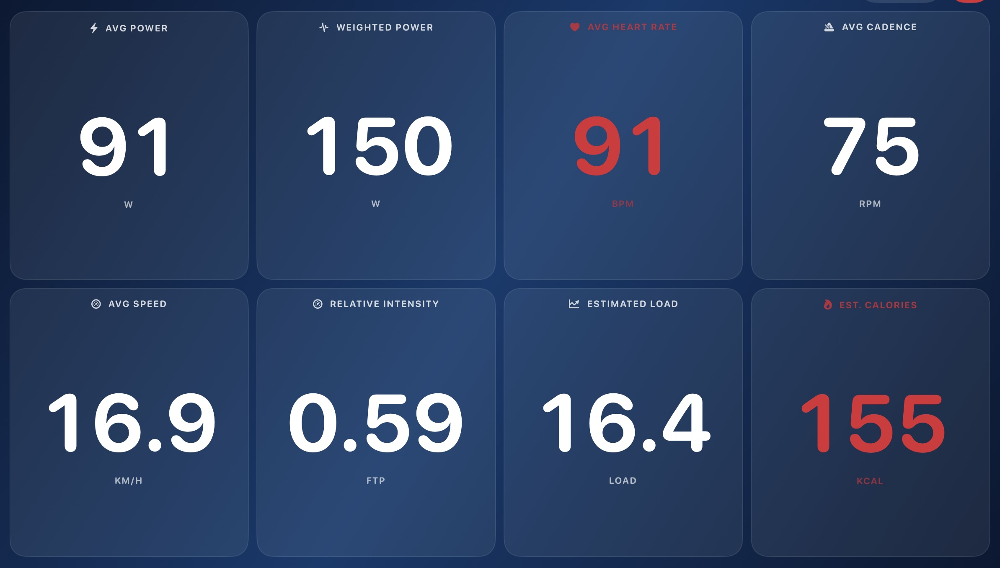
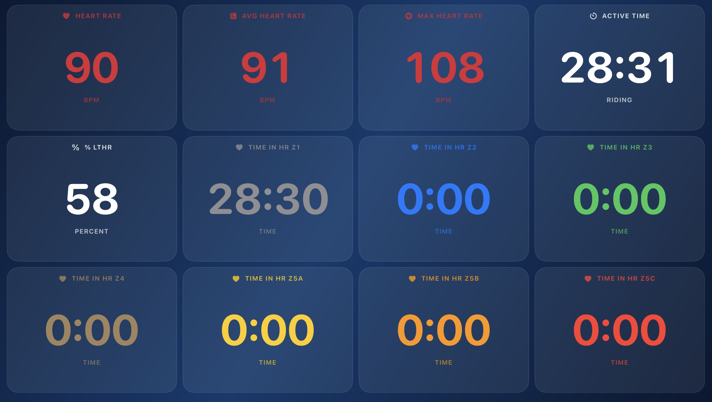

05
Ride
The workout, the response and the controls—together.
Follow personalised targets with the information that matters under pressure: actual and target power, heart rate, cadence, interval time, W/kg, percentage of FTP and the current training zone.
Live ERG controlFree RideWorkout biasThree live views

Workout Ride
A real workout. A real trainer. Three focused views.
Press play and let ERG mode apply each target using your FTP. Standard View combines controls, metrics, interval guidance and the profile; Focused View gives the live data more room; Max Metrics makes the essential numbers impossible to miss.


Free Ride
Ride freely—or ask the trainer to hold your target.
Start in Passive mode or select a target for ERG control. Live power, cadence, heart rate and W/kg remain visible while the rolling 120-second trace builds a colour-coded record of your effort.


Max Metrics View
Swipe through the ride. See every number at full scale.
Keep the essential workout targets in front of you, then move continuously through live power, ride averages and heart-rate performance. Large, high-contrast data cards stay readable when the effort gets hard.
Workout data→Power performance→Ride averages→Heart-rate performance↻




Designed for the effort
Useful when looking at the screen is the last thing you want to do.
Large digital readouts and clearly separated controls make the screen easier to use during hard intervals. Cycle between Standard, Focused and Max Metrics views, then swipe through live workout, power, averages and heart-rate pages when the numbers deserve the whole display.
- Actual and target power shown separately
- Live zone names and target-status guidance
- One-touch pause, skip and workout bias controls
- Real-time power, averages and heart-rate performance screens
- Portrait and landscape layouts for iPhone and iPad
Next: Review
Keep the ride when the final interval ends.
Review the completed graph and performance metrics, save a readable local history or export the ride.